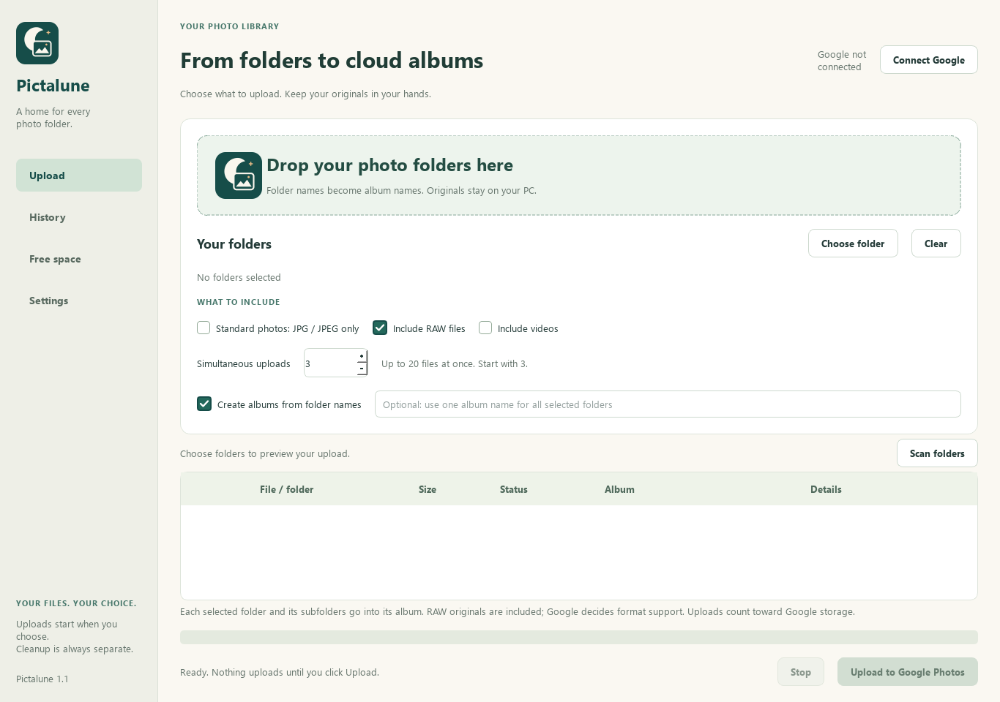

Folders become albums
Choose folders and review the file list before uploading. Each selected folder can create an album with the same name.
 Pictalune
PictaluneWindows photo uploader
Upload selected folders to your Google Photos account. Keep folder names as album names, reuse tracked uploads, and review every local cleanup.
Currently in private testing. The redesigned Windows app is being prepared for Microsoft Store review. Google sign-in is limited to approved test accounts. Pictalune has not completed Google's OAuth verification and is not available as a general public release.
Choose folders and review the file list before uploading. Each selected folder can create an album with the same name.
Upload 1 to 20 files at once. RAW files are included by default; Google decides which camera formats it supports.
Only a fresh cloud download matching the original's size and SHA-256 can qualify for separately confirmed Recycle Bin cleanup.

Pictalune requests permission to add photos and albums to your Google Photos account and read media created by this app. Reading is used to verify cloud copies before local cleanup. Account email and identity connect the right local receipts to the right Google account. Pictalune does not request access to browse your entire Google Photos library.
Sign-in opens in your browser. You do not supply a credentials file or give Pictalune your Google password. Selected media goes directly to Google; there is no developer-operated upload server.
Reusing an upload depends on a saved receipt from this app, the same Google account and the same OAuth connection. Photos uploaded through other tools cannot be searched automatically. Google can change image metadata, RAW content or video bytes, so some successful uploads cannot pass exact cloud comparison and stay on your PC. Uploads count toward your Google storage.
The app is independently developed by Axel Loosme and is not affiliated with Google. Google Photos is a trademark of Google LLC.